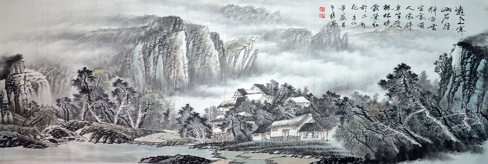
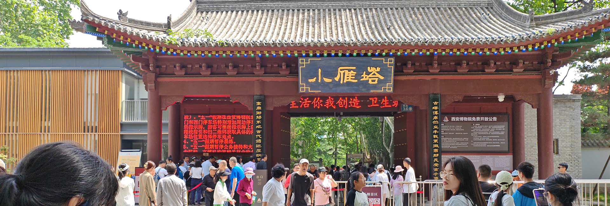

中医药是中国传统医学的一部分，具有悠久的历史和广泛的应用。它是基于中国古代医学理论和实践经验，以维护人体健康、防治疾病为目标的一种综合医学体系。
中医药包括两个主要方面：中医和中药：
1.中医：中医是中医药体系中的核心，强调整体观念和平衡原则。中医认为人体是一个与自然环境相互关联的整体，健康取决于身体内外的平衡状态。中医诊断方法包括望、闻、问、切四诊，通过观察面色、舌苔、脉搏等来判断疾病的原因和性质。中医治疗方法包括针灸、中药、推拿按摩、气功等，旨在调整身体的阴阳平衡，促进自愈能力。
2.中药：中药是中医药体系中的重要组成部分，包括草药、动物药、矿物药等。中药的使用历史悠久，它们以天然草本植物、动物及矿石为原料，经过炮制、配伍等处理方法制成。中药可以单味使用，也可以根据病情配伍使用。中药被认为具有多种功效，可以调理身体，治疗疾病。常见的中药包括人参、黄芪、当归、枸杞等。
中医药在中国及其他亚洲国家广泛应用，并在世界范围内逐渐受到认可和接受。许多人选择中医药作为维护健康和治疗疾病的一种选择，特别是在慢性病管理、疼痛管理、调节免疫系统等方面。
茶文化是一种涵盖茶叶种植、制作、品饮以及与茶相关的艺术、哲学和礼仪的文化体系。茶文化源远流长，起源于中国，并逐渐传播到世界各地。
茶文化在人们的生活中扮演着重要的角色。它不仅是一种饮品，还是一种艺术、传统和社交的象征。茶文化通过茶叶的种植、制作、品饮以及与之相关的文学、绘画、音乐等方面的表达，传递着人们对自然、生活和人际关系的理解和追求。
茶文化展现了人们对茶叶的热爱、尊崇和追求，以下是对这三个方面的简要介绍：
1.茶道：茶道是茶文化的核心，强调茶的仪式、审美和禅意。茶道强调清静、平和和谐，通过精心准备和品味茶叶，追求心灵的宁静和内心的寂静。茶道注重茶具的使用和品茗的仪式，包括点茶、煮水、炉火等环节。茶道的精髓在于将茶与生活、自然、人际关系等融为一体，通过茶的净化和共享来达到身心的平衡与和谐。
2.茶艺：茶艺是茶文化的表现形式之一，是通过表演和展示茶的独特魅力和技艺。茶艺师通过熟练的技巧和精心的准备，展示茶叶的品种、制作过程以及品饮的方法。茶艺表演通常包括茶具的使用、冲泡技巧、茶汤的品鉴等环节，以展现茶叶的香气、色泽、口感和茶文化的精神内涵。
3.茶具：茶具是茶文化中不可或缺的组成部分，它包括制作茶叶和品茶所需要的各种工具和器皿。茶具的种类繁多，常见的有茶壶、茶杯、茶盘、茶筅（茶棍）、茶叶罐等。茶具的材质和造型多样，根据不同的茶叶和茶道风格，选用适合的茶具有助于提升茶的品质和味道。茶具也承载着茶文化的历史、传统和美学价值，被视为一种艺术品和收藏品。
中国传统园林艺术是中国古代园林设计和建设的精华，具有深厚的历史和独特的风格。近年来，中国传统园林艺术在现代园林设计、规划和建设中得到了广泛的应用和发展。
1.园林设计：中国传统园林艺术注重以自然景观为基础，追求人与自然的和谐统一。在现代园林设计中，借鉴了中国传统园林的理念和手法，设计师们注重恢复和保护自然环境，创造出具有独特意境和人文内涵的园林空间。设计中常使用的元素包括曲径通幽、假山水池、廊桥亭榭、花木繁茂等，力求营造出一种宜人、宁静的氛围。
2.园林规划：中国传统园林艺术在现代园林规划中起到了重要的指导作用。在城市规划中，借鉴传统园林的布局原则，如注重空间序列、强调对景和远景的呈现、注重对称和平衡等，使园林成为城市景观的重要组成部分。同时，传统园林的特色元素也被融入到城市公园、景区规划中，使其更具文化底蕴和独特魅力。
3.园林建设：中国传统园林艺术在现代园林建设中得到了广泛的应用和发展。在建设过程中，注重采用传统的建筑材料和工艺，如石雕、木构建筑、琉璃瓦等，以体现中国传统建筑的风格和特色。同时，传统园林的景观元素和构造手法也被保留和传承，使园林空间更具独特的美感和文化价值。
通过将中国传统园林艺术与现代园林设计、规划和建设相结合，不仅实现了传统文化的传承和创新，也为人们提供了更美好、舒适的生活环境。这种现代应用不仅体现了中国园林文化的独特价值，也在国内外获得了广泛的认可和赞誉。